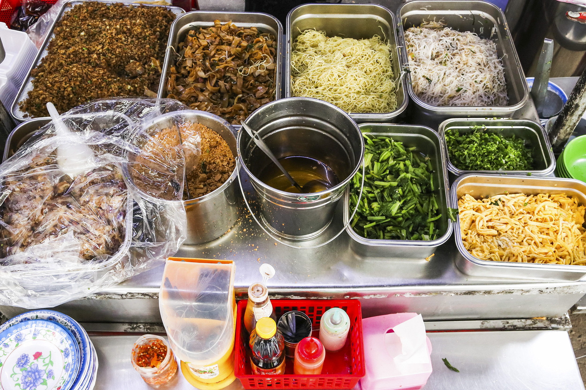

Có lẽ ấn tượng đầu tiên của thực khách về quán ăn này là cảnh tượng một không gian nhỏ nườm nượp khách. Từ 11 giờ trưa, quán đã gần như hết chỗ ngồi. Từ người lớn tuổi, dân lao động đến học sinh sinh viên, tất cả đều ăn uống và nói chuyện vui vẻ, xua tan đi sự mệt mỏi sau một khoảng thời gian dài làm việc. Đi cùng với không khí tấp nập ấy là sự niềm nở và vui vẻ của chủ quán và nhân viên, tạo nên một không khí đầm ấm cho quán ăn.
Một số điều thú vị về tiệm ăn này phải kể đến như việc há cảo Phánh đã mở bán hơn 60 năm, truyền qua 4 đời chủ quán khác nhau, là một trong những quán ăn lâu đời nhất khu phố người Hoa, nổi danh khắp Sài thành.
Nhiều thực khách chia sẻ quán được biết đến rộng rãi, có lẽ là vì giá thành rẻ đến bất ngờ của các món ăn. "Trong khi tô hủ tiếu gõ rẻ nhất Sài Gòn tôi ăn đã khoảng 15.000 đồng thì quán há cảo này chỉ bán 10.000 đồng một dĩa 4 viên."
Bật mí lý do bán rẻ, cô chủ quán không ngại ngần chia sẻ: “Quán tôi bán được nhiều lắm, bao nhiêu người thương nên bán rẻ rồi tôi lấy số lượng làm lời. Bán vậy tụi học sinh mới ghé ăn được, còn người lớn thì có thể ăn mỗi thứ một ít mà không bị ngán”.
Không chỉ về mặt giá cả, người ta biết đến quán bởi những món ăn được chuẩn bị tỉ mỉ, chỉn chu, ngon miệng. Quán còn bán đa dạng rất nhiều món. Từ điểm tâm đến mì xào, xôi, bánh bột, hoành thánh lá, hủ tiếu xào.
Riêng điểm tâm thì quán có tới 8 loại: thịt, tôm, hẹ, bắp,… Phần nhân đầy ụ được bao bọc bởi lớp bột mỏng vừa bên ngoài khiến nhiều thực khách ấn tượng. Dưới đây là thực đơn của tiệm ăn Há cảo Phánh cho bạn đọc tham khảo.
Địa chỉ: Lô B Chung Cư, Đ. Nguyễn Trãi, Phường 7, Quận 5, Hồ Chí Minh.
SĐT: 0765 897 190
Giờ mở cửa: 7AM - 6PM
Quay về trang chủ